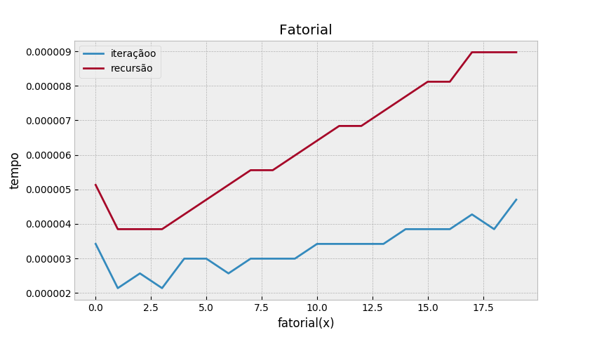
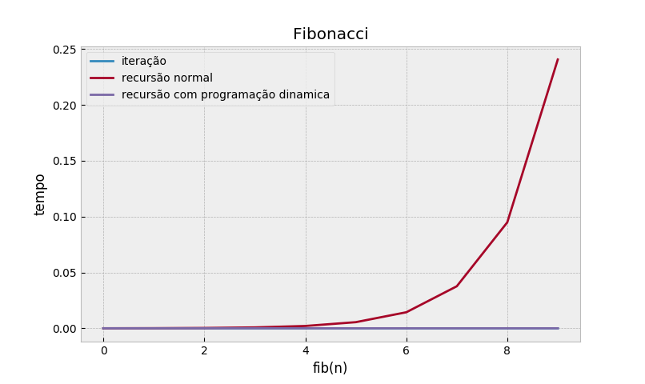
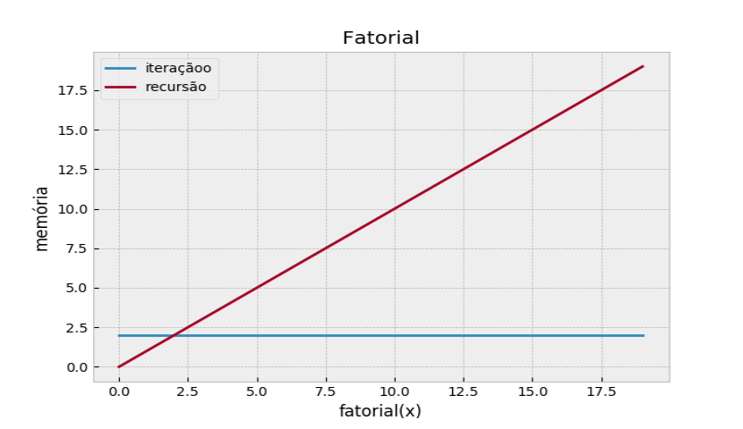
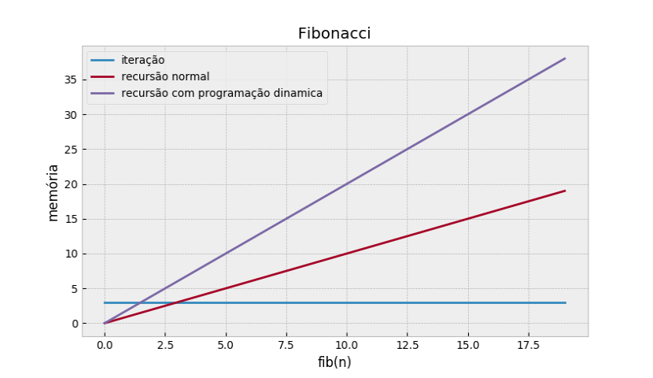

Computação: É a técnica de marcar um bloco de instruções dentro do código de um programa de computador para um número definido de repetições.
Computação: È o ato de uma função chamar a si mesma, com o objetivo de dividir o problema em subproblemas menores que podem ser resolvidos trivialmente.
function fatorial(num){
var resultado;
if(num==1){
resultado=1;
stack.push("fatorial("+num.toString()+")= 1");
}else{
stack.push("fatorial("+num.toString()+")= "+num.toString()+" x fatorial("+(num-1).toString()+")");
resultado=num*fatorial(num-1);
stack.change("fatorial("+num.toString()+")= "+num.toString()+" x "+(resultado/num).toString());
stack.change("fatorial("+num.toString()+")= "+resultado.toString());
}
stack.change("retorna "+resultado.toString());
stack.pop()
return resultado;
}
fatorial(6);
stack.run(2000);
|  |  |
|  |  |
1)Cálculo do mdc entre dois números, usando o algoritmo de Euclides.
A ideia principal no Algoritmo de Euclides é que o MDC pode ser calculado, usando o resto da divisão como entrada para o próximo passo, o que é baseado na seguinte propriedade do MDC:
MDC(a,b)=MDC(b,r)
Sendo r o resto da divisão de a por b.
#include iostream
int main(){
}
2)Recebe um número positivo não nulo e retorna 1 se ele for primo e 0 caso contrário.
Um número natural é dito primo se ele possui unicamente dois divisores naturais distintos: o número um e ele mesmo.
#include iostream
int main(){
}
3) Você tem um um triângulo feito de blocos, A linha superior tem 1 bloco, a próxima linha para baixo tem 2 blocos, a próxima linha tem 3 blocos, e assim por diante. Calcule recursivamente (sem loops ou multiplicação) o número total de blocos em tal triângulo com o número de linhas especificado.
#include iostream
int main(){
}
4)Dado um int n não negativo, devolva a soma de seus dígitos recursivamente (sem loops).
#include iostream
int main(){
}